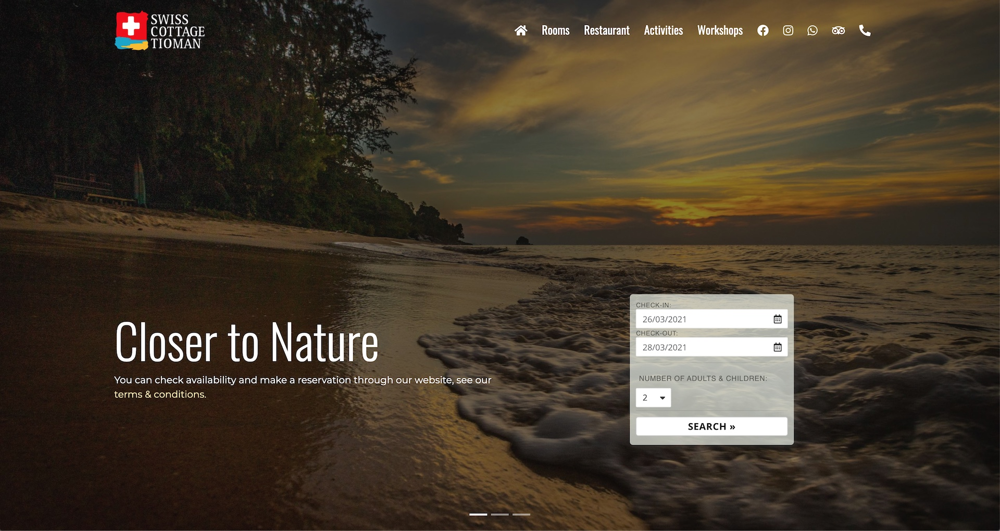

swiss-cottage-tioman.com
Objective
Design & build a mobile friendly website using the content provided by the client, with the following features;
- Online booking engine, so guests can book directly through the website
- Showcase the rooms, restaurant, activities & workshops that the resort has to offer
- Provide easy to access general information that is easy for the custome to access
- Showcase some of the reviews that customers have written about the resort on Tripadvisor & Booking.com
- Easy for the client to edit & update
Notes
Why is it important to keep updating your website?
Keeping your website content up to date is important as it helps to build trust between you & your customers who rely on your website for information on whatever market you are in. Keeping your content fresh is not only good for your existing base, but updated information also helps to build domain authority, which is one for the factors in helping your website rank higher in search engine results.